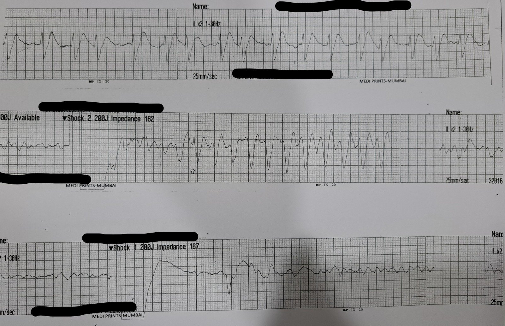
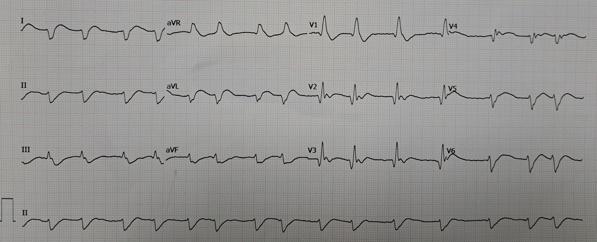
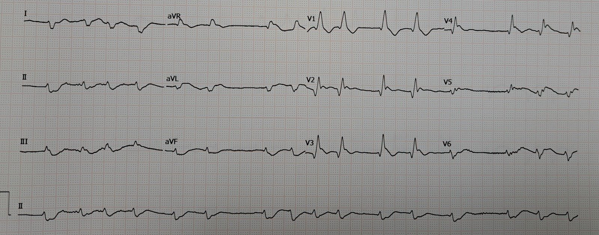
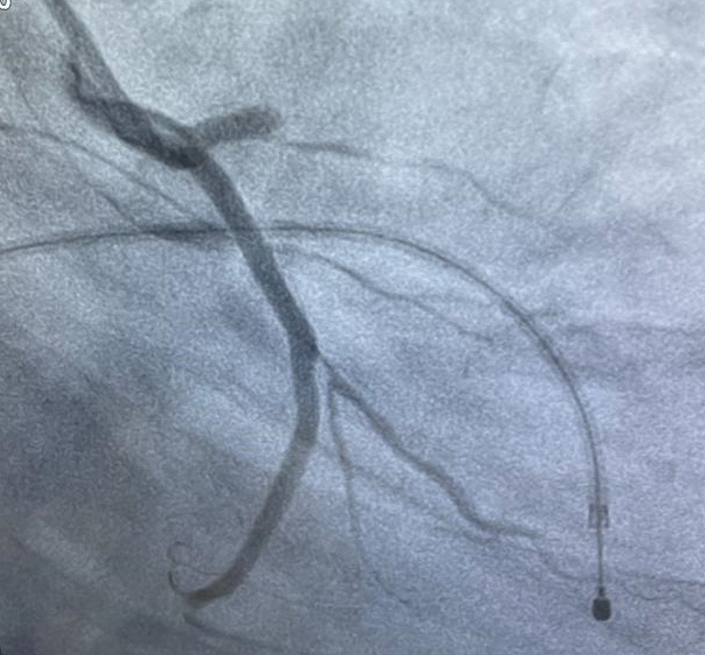
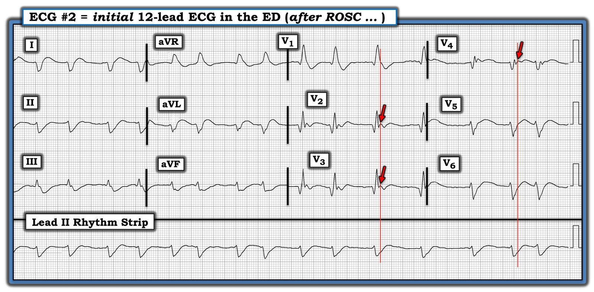
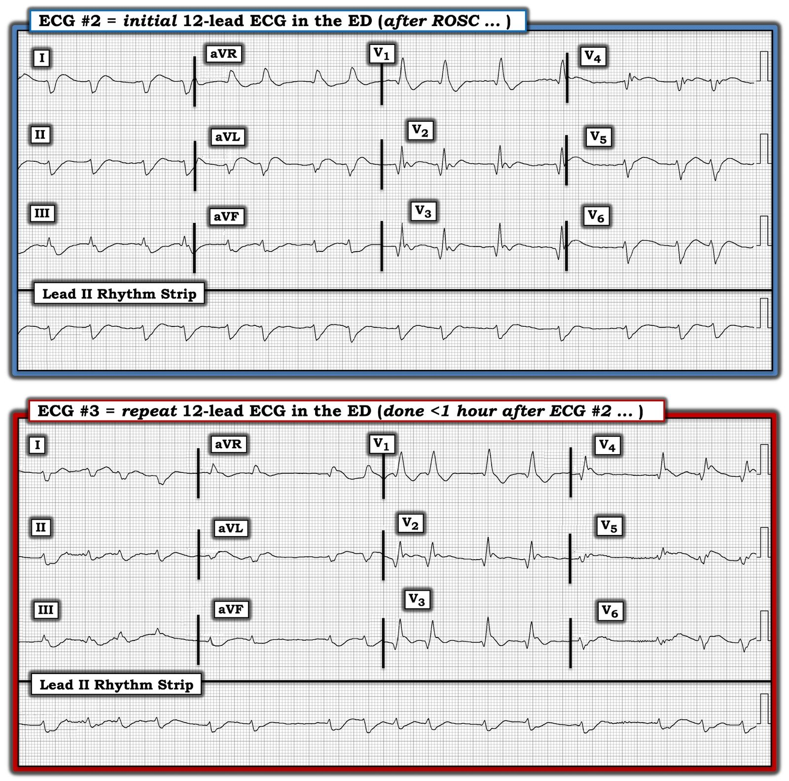

13/07/2022 — Xem điều gì xảy ra khi bác sĩ hội chẩn “chưa bị thuyết phục rằng đây là STEMI”
Bản dịch tiếng Việt của bài "See what happens when the consultant is “Not convinced of STEMI”" – Dr. Smith’s ECG Blog. Giữ nguyên toàn bộ 7 hình ảnh của bản gốc.
Ca do Arjun V gửi, Pendell Meyers viết, Smith biên tập
Một người đàn ông ở đầu độ tuổi 40, có tiền sử tăng huyết áp (HTN) và béo phì, bị ngừng tim đột ngột ngoài bệnh viện. Đội cấp cứu ngoài viện (EMS) đến nơi và thấy bệnh nhân đang rung thất (VF). Bệnh nhân được khử rung thành công, nhưng có thêm vài cơn ngừng tim do VF trên đường đến khoa cấp cứu.
Dưới đây là một vài ví dụ về nhịp tim trước viện của bệnh nhân:


Tại khoa cấp cứu (ED), đạt được tái lập tuần hoàn tự nhiên (ROSC) bền vững. Bệnh nhân được đặt nội khí quản, chỉ khám được rất ít về thần kinh.
Bệnh nhân được ghi vài điện tâm đồ tại ED ngay sau ROSC:




Các điện tâm đồ cho thấy nhiều khả năng là AFib với hình thái RBBB. Có trục lệch phải rất rõ, nhiều khả năng biểu hiện blốc phân nhánh trái sau (left posterior fascicular block). RBBB + LPFB là một dấu hiệu đáng ngại trong ngừng tim, có lẽ không tệ bằng blốc phân nhánh trước, nhưng rất nguy hiểm, và là một dấu hiệu mạnh của OMI do LAD.
Có STE đồng hướng ở V2-V4, sau đó là STE ngược hướng quá mức ở V5 và V6 (RBBB đơn thuần KHÔNG hề có STE ở V5, V6, mặc dù có sóng S rộng bình thường).
Có STE và sóng T tối cấp ở I và aVL, kèm STD soi gương (reciprocal) ở các chuyển đạo dưới.
Các điện tâm đồ này có giá trị chẩn đoán OMI trước bên (tắc LAD đoạn gần), và RBBB nên được coi là một dấu hiệu mới và đáng sợ, cũng chỉ hướng đến OMI do LAD.
Bác sĩ tim mạch “chưa bị thuyết phục rằng đây là STEMI”, vì vậy đã có khoảng một giờ chậm trễ tính từ các điện tâm đồ có giá trị chẩn đoán này cho đến khi thông tim.
Thông tim cho thấy tắc LAD cấp, hoàn toàn:


Đáng tiếc là bệnh nhân đã tử vong trên bàn phòng thông tim (cath lab).
Chúng ta đã biết rằng tính nhất quán giữa những người đọc khi đo ST chênh lên ở bệnh nhân đau ngực là rất kém:
McCabe và cs. Physician accuracy in interpreting potential ST-segment elevation myocardial
infarction electrocardiograms (Độ chính xác của bác sĩ khi đọc các điện tâm đồ nghi nhồi máu cơ tim ST chênh lên). Journal of the American Heart Association 2013;2:e000268.
Carley và cs. What’s the point of ST elevation? (ST chênh lên thì có ý nghĩa gì?) Emerg Med J. 2002;19:126-128.
Tandberg và cs. Observer variation in measured ST-segment elevation (Sự khác biệt giữa những người quan sát khi đo ST chênh lên). Ann Emerg Med. 1999 Oct;34(4 Pt 1);448-52.
Đối với ngừng tim
Điện tâm đồ sau ngừng tim thường còn khó đọc hơn nữa, và nghiên cứu này (Smith là một trong các tác giả và người đọc điện tâm đồ) cho thấy độ tin cậy giữa những người đọc chỉ ở mức khiêm tốn, ngay cả giữa các chuyên gia điện tâm đồ giàu kinh nghiệm:
Interobserver variability among experienced electrocardiogram readers to diagnose acute thrombotic coronary occlusion in patients with out of hospital cardiac arrest: Impact of metabolic milieu and angiographic culprit (Độ biến thiên giữa những người đọc điện tâm đồ giàu kinh nghiệm trong chẩn đoán tắc mạch vành cấp do huyết khối ở bệnh nhân ngừng tim ngoài bệnh viện: Ảnh hưởng của môi trường chuyển hóa và tổn thương thủ phạm trên chụp mạch)

===================================
BÌNH LUẬN CỦA TÔI, bởi KEN GRAUER, MD (13/7/2022):
===================================
Một ca bệnh đáng tiếc: bệnh nhân này được hồi sức sau OHCA (ngừng tim ngoài bệnh viện – Out-of-Hospital Cardiac Arrest) — nhưng đã tử vong trong lúc thông tim. Rung thất (VFib) đã được đội EMS ghi nhận. Cần nhiều lần sốc điện — nhưng cuối cùng đạt được một nhịp trên thất, với ROSC (tái lập tuần hoàn tự nhiên – Return Of Spontaneous Circulation) bền vững tại ED. Như Tiến sĩ Meyers đã nêu — đã có sự chậm trễ đáng kể cho đến khi thông tim được thực hiện.
- Tôi tập trung bình luận vào hai bản ghi 12 chuyển đạo được ghi tại ED trước khi quyết định tiến hành thông tim. Để rõ ràng — tôi đã đặt lại các bản ghi này bên dưới trong Hình 1 và Hình 2.


SUY NGHĨ CỦA TÔI về điện tâm đồ 12 chuyển đạo ban đầu:
Nhịp ở dải chuyển đạo II dài của điện tâm đồ #2 không đều hoàn toàn và không có sóng P. Đây là AFib với đáp ứng thất được kiểm soát.
- Tôi thấy bản ghi này khó đọc — vì phần cuối của phức bộ QRS hòa lẫn vào đoạn ST ở nhiều chuyển đạo. Dù vậy — QRS rõ ràng là rộng. Hình thái QRS phù hợp với RBBB (blốc nhánh phải – Right Bundle Branch Block) vì: i) QRS chủ yếu dương ở chuyển đạo V1; và, ii) Có sóng S tận rộng ở cả chuyển đạo I và V6.
- Có các sóng Q lớn và rộng ở các chuyển đạo V1, V2, V3 — và ở ít nhất một trong 3 phức bộ QRS ở chuyển đạo V4 (Dường như có một sóng r ban đầu rất nhỏ ở phức bộ thứ 2 và thứ 3 trong chuyển đạo này). Khi có RBBB — đây là các sóng Q nhồi máu.
- Có một trục QRS mặt phẳng trán bất thường! Đó là vì phức bộ QRS ở chuyển đạo I chủ yếu âm (nếu không nói là âm hoàn toàn). Hình thái QRS ở các chuyển đạo chi không phù hợp với LAHB lẫn LPHB. QRS ở chuyển đạo aVL cũng chủ yếu âm (nếu không nói là âm hoàn toàn). Tôi nghi ngờ việc mất các lực dương ở các chuyển đạo bên cao này là hậu quả của tổn thương cơ tim lan rộng (có hoặc không kèm suy giảm dẫn truyền ở một hoặc cả hai phân nhánh).
- Có điện thế thấp lan tỏa trong điện tâm đồ #2 (tức là Không có chuyển đạo chi nào vượt quá 5 mm — và không có chuyển đạo ngực nào vượt quá 10 mm). Như tôi đã nhấn mạnh trước đây — trong một số bối cảnh lâm sàng, điện thế thấp có thể là dấu hiệu của “choáng” cơ tim (myocardial stunning), có thể do nhồi máu lan rộng, và cũng như trong ca hôm nay — do ngừng tim (Xem Bình luận của tôi ở cuối trang trong các bài ngày 12 tháng Mười Một năm 2020 và 24 tháng Một năm 2020 trên Blog của Tiến sĩ Smith).
Sóng Osborn (Osborn Waves):
Tôi tin rằng có sóng Osborn trong điện tâm đồ #2. Sóng Osborn được mô tả là một sóng lệch có dạng vòm hoặc bướu, xuất hiện tại điểm mà phần cuối phức bộ QRS nối với phần đầu đoạn ST. Đây là điểm J (tức là điểm nối – Joins – phần cuối QRS với phần đầu đoạn ST) — vì vậy sóng Osborn là các “sóng J” bị phóng đại hay sóng điểm J. Chúng còn được gọi là dấu hiệu “bướu lạc đà” (camel-hump).
- Được mô tả lần đầu năm 1953 (bởi Tiến sĩ John Osborn) — các sóng Osborn này thường gặp nhất khi có hạ thân nhiệt (thường không thấy cho đến khi nhiệt độ trung tâm dưới 90°F) mức độ đáng kể.
- Điều quan trọng là cần nhận ra rằng các tình trạng khác cũng có thể đi kèm sóng lệch nổi bật ở điểm J này. Sóng Osborn đã được báo cáo trong tăng calci máu, tổn thương não, xuất huyết dưới nhện, hội chứng Brugada, ngừng tim do VFib — và — thiếu máu cục bộ cấp nặng dẫn đến nhồi máu cơ tim cấp (Xem Bình luận của tôi trong bài ngày 22 tháng Mười Một năm 2019 trên Blog của Tiến sĩ Smith).
- Rituparna và cs. (Pacing Clin Electrophysiology 30[6] 817-819, 2007) — cũng như Chauhan và Brahma (Int. J. Crit. Illn. Inj. Sci 5[4] 268-270, 2015) — đều nhấn mạnh một mối liên quan nhiều khả năng có giữa sự xuất hiện cấp tính của sóng J do thiếu máu cục bộ — và nguy cơ cao xuất hiện rối loạn nhịp thất ác tính.
Trong Hình 1 — tôi đã kẻ một đường thời gian thẳng đứng màu ĐỎ, dựa vào vị trí rõ ràng là điểm kết thúc của phức bộ QRS ở chuyển đạo V1. Tôi đã kéo dài lên trên và xuống dưới một đường thời gian thẳng đứng màu ĐỎ khác, dựa vào vị trí rõ ràng là điểm kết thúc của phức bộ QRS ở các chuyển đạo V5 và V6.
- Các mũi tên ĐỎ ở các chuyển đạo V2, V3 và V4 làm nổi bật chỗ khía rõ tại điểm nối (Junction) giữa phần cuối phức bộ QRS — và phần đầu đoạn ST (bắt đầu ngay bên phải các đường ĐỎ thẳng đứng) = các điểm J (hoặc trong ca hôm nay, theo tôi là các sóng J do thiếu máu cục bộ ở bệnh nhân ngừng tim do nhồi máu cấp này) nổi rõ.
Tiếp tục đánh giá sóng ST-T trong điện tâm đồ #2:
Như tôi đã nêu — tôi thấy việc đánh giá điện tâm đồ #2 đặc biệt khó, vì ở nhiều chuyển đạo không phân biệt được rõ giữa phần cuối QRS và sóng ST-T.
- Bệnh nhân trong ca hôm nay đến viện vì OHCA, với các cơn VFib tái phát cần sốc điện cho đến khi cuối cùng ổn định được tại ED. Ngoài nhịp lúc nhập viện là AFib — điện tâm đồ 12 chuyển đạo ban đầu cho thấy RBBB và sóng Q nhồi máu lớn không chỉ ở các chuyển đạo V1 đến V4 — mà có lẽ còn ở các chuyển đạo bên cao. Ít nhất — các sóng ST-T tròn (không rõ hình dạng) ở các chuyển đạo I và aVL trông tối cấp (nếu không muốn nói là có ST chênh lên rõ rệt, ít nhất ở chuyển đạo aVL).
- ST chênh xuống soi gương thấy ở các chuyển đạo dưới (đặc biệt ở các chuyển đạo III và aVF).
- Sóng ST-T chênh xuống ở chuyển đạo V1 là điều được dự đoán, do có RBBB. Nhưng việc không có sóng ST-T chênh xuống rõ ở các chuyển đạo V2 và V3 là không bình thường — vì khi có RBBB, thường cũng thấy một mức ST-T chênh xuống nào đó ở các chuyển đạo trước này.
- Dù tinh tế — sóng ST-T có dạng vòm (coving), và trông ít nhất là hơi chênh lên ở các chuyển đạo ngực bên V4,V5,V6.
- NHẬN ĐỊNH CỦA TÔI: Đã có một vùng nhồi máu lan rộng, nhiều khả năng là hậu quả của OMI do LAD đoạn gần cấp — gây ra ngừng tim.
CA BỆNH TIẾP DIỄN:
Một lúc sau (tức là chưa đến 1 giờ sau điện tâm đồ #2) — một điện tâm đồ ghi lại được thực hiện tại ED. Bệnh nhân đã được đặt nội khí quản — và dường như đã ổn định sau ROSC.
- Tôi đã đặt hai bản ghi 12 chuyển đạo này cạnh nhau trong Hình 2. BẠN sẽ đọc như thế nào điện tâm đồ #3 — khi đối chiếu với điện tâm đồ 12 chuyển đạo ban đầu?


SUY NGHĨ CỦA TÔI về điện tâm đồ ghi lại:
Nhịp trong điện tâm đồ #3 vẫn là AFib. RBBB vẫn tồn tại — các sóng Q nhồi máu ở chuyển đạo ngực cũng vậy. Trong số những thay đổi giữa 2 bản ghi trong Hình 2 có:
- Đã có giảm thêm biên độ QRS ở cả chuyển đạo chi lẫn chuyển đạo ngực. Trong bối cảnh lâm sàng này — đây là một dấu hiệu có thể đáng ngại.
- Hình thái QRS ở các chuyển đạo chi trong điện tâm đồ #3 giờ trông phù hợp hơn với LPHB (tức là chủ yếu âm ở chuyển đạo I — và chủ yếu dương ở các chuyển đạo dưới). Điều này gợi ý blốc hai phân nhánh (RBBB/LPHB).
- Dù hiểu rằng khó đánh giá thay đổi sóng ST-T khi điện thế rất nhỏ và các phức bộ QRST biến đổi đáng kể từ 1 nhát sang nhát kế tiếp — tôi cho rằng rõ ràng có ST chênh lên tăng thêm ở các chuyển đạo ngực (đặc biệt ở V4,V5,V6).
CÂU HỎI cuối cùng: Bệnh nhân OHCA nào cần thông tim?
Vai trò của thông tim sau OHCA (ngừng tim ngoài bệnh viện – Out-of-Hospital Cardiac Arrest) vẫn còn được tranh luận. Những người sống sót sau OHCA nào nên được thông tim sớm? Trong số các điểm MẤU CHỐT được khuyến nghị bởi Tuyên bố khoa học AHA năm 2019 (Yannopoulos và cs. — Circulation 139:e530-e552, 2019) có các điểm sau:
- Bệnh nhân OHCA do các nhịp sốc được (tức là VFib, VT vô mạch) — có xác suất cao mắc CAD (bệnh động mạch vành – Coronary Artery Disease) là nguyên nhân khởi phát.
- Tỷ lệ hiện mắc CAD ở những bệnh nhân này đạt ~70-85% — NẾU có ST chênh lên trên điện tâm đồ sau hồi sức. Thông tim sớm nhằm tái tưới máu có tác động thuận lợi lên tỷ lệ sống đến khi ra viện.
- Tỷ lệ hiện mắc CAD ở bệnh nhân không có ST chênh lên trên điện tâm đồ sau hồi sức — vẫn là ~25-50%. Do đó — những bệnh nhân này (xét như một nhóm) cũng được lợi từ thông tim sớm.
- Suy nghĩ cuối cùng: Ở bệnh nhân OHCA này — điện tâm đồ 12 chuyển đạo ban đầu trong ca hôm nay đã ủng hộ thông tim sớm. Chỉ định đó dường như càng được củng cố bởi điện tâm đồ ghi lại trong Hình 2.